Kho lưu trữ mã nguồn và triển khai hệ thống: https://github.com/LeeMinhPhuowng/Assignment-06
Trong lý thuyết học máy truyền thống, các thuật toán phân lớp và hồi quy thường giả định rằng các mẫu dữ liệu quan sát được lấy mẫu độc lập và có cùng phân phối (Independent and Identically Distributed - i.i.d.):
Tuy nhiên, trong các bài toán thực tiễn như chuỗi giá chứng khoán, giá kim loại quý, tín hiệu cảm biến IoT hay chuỗi từ ngữ trong ngôn ngữ tự nhiên, giả định i.i.d. hoàn toàn bị vi phạm. Một điểm dữ liệu $x_t$ tại bước thời gian $t$ luôn mang mối tương quan mật thiết với các điểm dữ liệu xuất hiện trước nó $(x_{t-1}, x_{t-2}, \dots, x_1)$.
Các mạng nơ-ron truyền thẳng truyền thống (Multi-Layer Perceptrons - MLP) tiếp nhận một vector đầu vào có chiều cố định $x \in \mathbb{R}^D$ và ánh xạ trực tiếp sang vector đầu ra $\hat{y} \in \mathbb{R}^K$ thông qua phép nhân ma trận kết hợp kích hoạt phi tuyến:
Mô hình hóa này gặp phải ba rào cản nền tảng khi đối mặt với dữ liệu chuỗi:
Để vượt qua giới hạn của mạng truyền thẳng, mạng nơ-ron hồi quy (Recurrent Neural Network - RNN) đưa vào cấu trúc một vòng lặp phản hồi (recurrent loop). Tại mỗi bước thời gian $t$, mạng duy trì một vector trạng thái ẩn (hidden state) $h_t \in \mathbb{R}^H$. Trạng thái ẩn đóng vai trò như một bộ nhớ nội tại (internal memory), tổng hợp và chưng cất toàn bộ thông tin lịch sử từ các bước thời gian quá khứ $x_1, x_2, \dots, x_t$.
Cơ chế cập nhật trạng thái ẩn được biểu diễn như một hàm chuyển tiếp trạng thái:
Trong đó $h_{t-1}$ là thông tin tóm tắt quá khứ đến thời điểm $t-1$, $x_t$ là vector quan sát mới tại thời điểm $t$, và $\theta$ là tập tham số có thể học được của mạng. Nhờ cơ chế chuyển trạng thái đệ quy này, trạng thái ẩn $h_t$ về mặt lý thuyết chứa đựng thông tin của một chuỗi lịch sử có độ dài tùy ý mà không làm thay đổi kích thước của vector biểu diễn.
Trụ cột cốt lõi làm nên sức mạnh và khả năng khái quát hóa của mạng hồi quy chính là nguyên lý chia sẻ tham số (parameter sharing across time). Thay vì gán một ma trận trọng số riêng biệt cho từng bước thời gian, RNN sử dụng chung một bộ trọng số duy nhất $\theta = \{W_{xh}, W_{hh}, W_{hy}, b_h, b_y\}$ cho toàn bộ các bước thời gian $t = 1, 2, \dots, T$.
Ý nghĩa toán học và tính toán của việc chia sẻ tham số:
Về mặt giải tích, mạng Vanilla RNN thực thi phép toán tổng hợp thông tin qua hai phương trình cơ bản tại mỗi bước thời gian $t$:
Trong đó:
Vector đầu ra dự đoán tại bước $t$ (hoặc tại bước cuối cùng $T$) được tính toán bằng cách chiếu trạng thái ẩn sang không gian đích:
Trong bài toán hồi quy chuỗi thời gian đơn biến hoặc đa biến, hàm $g(\cdot)$ là hàm đồng nhất tuyến tính $g(z) = z$, khi đó:
Trong đó $W_{hy} \in \mathbb{R}^{K \times H}$ và $b_y \in \mathbb{R}^{K \times 1}$.
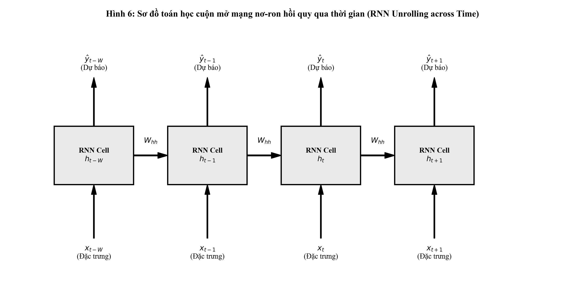
Biểu đồ Hình 6 minh họa trực quan quá trình cuộn mở (unrolling/unfolding) của đồ thị tính toán hồi quy theo dòng thời gian. Mặc dù cấu trúc mạng có thể được biểu diễn cô đọng như một ô nơ-ron tự phản hồi, việc cuộn mở đồ thị tính toán giúp chuyển đổi đồ thị chu trình thành một đồ thị có hướng không chu trình (Directed Acyclic Graph - DAG) với chiều dài $T$, mở đường cho việc áp dụng quy tắc dây chuyền để tính đạo hàm lan truyền ngược.
Để tối ưu hóa các ma trận trọng số $W_{xh}, W_{hh}, W_{hy}$ và các vector bias $b_h, b_y$, giải thuật lan truyền ngược qua thời gian (Backpropagation Through Time - BPTT) được áp dụng. Giả sử hàm mất mát tổng thể trên toàn bộ chuỗi thời gian có độ dài $T$ được định nghĩa bằng tổng các mất mát cục bộ:
Xét trường hợp hàm mất mát sai số bình phương trung bình (MSE):
Đạo hàm của hàm mất mát đối với ma trận trọng số đầu ra $W_{hy}$ phụ thuộc trực tiếp vào trạng thái ẩn tại từng bước thời gian:
Ngược lại, việc tính toán đạo hàm theo ma trận hồi quy $W_{hh}$ phức tạp hơn nhiều vì trạng thái ẩn $h_t$ không chỉ phụ thuộc vào $W_{hh}$ ở bước $t$, mà còn phụ thuộc thông qua trạng thái $h_{t-1}$, vốn lại phụ thuộc vào $h_{t-2}$, kéo dài ngược về $h_0$. Áp dụng quy tắc dây chuyền nhiều biến:
Trong đó $\frac{\partial^+ h_k}{\partial W_{hh}}$ biểu diễn đạo hàm cục bộ của $h_k$ theo $W_{hh}$ (coi $h_{k-1}$ là hằng số):
Thành phần then chốt quyết định dòng chảy đạo hàm qua thời gian là đạo hàm riêng ma trận Jacobi $\frac{\partial h_t}{\partial h_k}$:
Phương trình tích chuỗi ma trận Jacobi ở trên là nguồn gốc toán học trực tiếp của hai vấn đề nan giải bậc nhất trong huấn luyện mạng hồi quy:
Khi khoảng cách thời gian $(t - k)$ tăng lên, đại lượng này suy giảm theo hàm mũ về 0. Hệ quả là thông tin sai số tại thời điểm $t$ không thể truyền ngược về các bước thời gian xa trong quá khứ $k \ll t$. Mạng mất hoàn toàn khả năng ghi nhớ và học các mối phụ thuộc dài hạn (long-term dependencies).
Hiện tượng này khiến giá trị gradient trong quá trình cập nhật vượt ra ngoài phạm vi biểu diễn dấu phẩy động (gây ra lỗi NaN hoặc Inf), làm rung lắc dữ dội quỹ đạo tối ưu hóa trọng số.
Giải pháp kiểm soát:
Được đề xuất bởi Hochreiter và Schmidhuber (1997), LSTM giải quyết triệt để bài toán triệt tiêu đạo hàm bằng cách thiết kế một kênh truyền dẫn thông tin riêng biệt gọi là trạng thái ô nhớ (Cell State) $c_t$, đóng vai trò như một tuyến đường cao tốc thông tin chạy dọc theo toàn bộ chuỗi thời gian với sự can thiệp tối thiểu của các phép nhân ma trận liên tiếp.
Dòng thông tin trong ô LSTM được điều tiết bởi ba cổng nơ-ron có hàm kích hoạt sigmoid $\sigma(z) \in (0, 1)$:
Trong đó ký hiệu $\odot$ đại diện cho phép nhân Hadamard (nhân từng phần tử tương ứng giữa hai tensor). Phép cập nhật $c_t = f_t \odot c_{t-1} + i_t \odot \tilde{c}_t$ là phép cộng trực tiếp. Khi cổng quên $f_t \approx 1$, gradient có thể chảy ngược nguyên vẹn qua ô nhớ $\frac{\partial c_t}{\partial c_{t-1}} \approx 1$ mà không bị suy giảm theo hàm mũ, giải quyết triệt để hiện tượng triệt tiêu đạo hàm trên các chuỗi hàng trăm bước thời gian.
Được đề xuất bởi Cho et al. (2014), GRU là một biến thể tinh giản của LSTM, hợp nhất trạng thái ô nhớ $c_t$ và trạng thái ẩn $h_t$ thành một vector trạng thái duy nhất, đồng thời thu gọn hệ thống điều khiển xuống còn hai cổng:
Nhờ cấu trúc gọn nhẹ hơn với số lượng tham số ít hơn khoảng $25\%$ so với LSTM, GRU đạt được tốc độ tính toán và suy luận nhanh hơn đáng kể trong khi vẫn duy trì năng lực lưu trữ ký ức dài hạn tương đương trên nhiều miền bài toán thực tế.
Nhằm kiểm chứng tường minh giải thuật giải tích ở trên, nghiên cứu tiến hành cài đặt hoàn chỉnh một mạng Vanilla RNN từ đầu bằng ngôn ngữ Python và thư viện NumPy. Module bao gồm đầy đủ luồng tính toán tiến (Forward pass), tính toán mất mát MSE, luồng tính toán lùi (Backward pass qua thời gian - BPTT) với việc tự đạo hàm tường minh các tensor trọng số và cơ chế cắt tỉa gradient clipping.
Mã nguồn thực thi được thiết kế chuẩn mực như sau:
import os
import sys
import numpy as np
class VanillaRNNScratch:
def __init__(self, input_dim, hidden_dim, output_dim, learning_rate=0.005, clip_value=5.0, seed=42):
np.random.seed(seed)
self.input_dim = input_dim
self.hidden_dim = hidden_dim
self.output_dim = output_dim
self.learning_rate = learning_rate
self.clip_value = clip_value
# Khởi tạo trọng số Xavier
self.W_xh = np.random.randn(hidden_dim, input_dim) * np.sqrt(2.0 / (input_dim + hidden_dim))
self.W_hh = np.random.randn(hidden_dim, hidden_dim) * np.sqrt(2.0 / (hidden_dim + hidden_dim))
self.W_hy = np.random.randn(output_dim, hidden_dim) * np.sqrt(2.0 / (hidden_dim + output_dim))
self.b_h = np.zeros((hidden_dim, 1))
self.b_y = np.zeros((output_dim, 1))
self.cache = {}
def forward(self, X, h_prev=None):
seq_len, batch_size, _ = X.shape
if h_prev is None:
h_prev = np.zeros((self.hidden_dim, batch_size))
h_states = {-1: h_prev.copy()}
a_states = {}
y_preds = np.zeros((seq_len, batch_size, self.output_dim))
for t in range(seq_len):
x_t = X[t].T
a_t = np.dot(self.W_hh, h_states[t - 1]) + np.dot(self.W_xh, x_t) + self.b_h
h_t = np.tanh(a_t)
y_t = np.dot(self.W_hy, h_t) + self.b_y
a_states[t] = a_t
h_states[t] = h_t
y_preds[t] = y_t.T
self.cache = {"X": X, "h_states": h_states, "a_states": a_states, "seq_len": seq_len, "batch_size": batch_size}
return y_preds, h_states
def compute_loss_and_grad(self, y_preds, y_true):
N = y_true.size
loss = np.mean((y_preds - y_true) ** 2)
dy = (2.0 / N) * (y_preds - y_true)
return loss, dy
def backward(self, dy):
X = self.cache["X"]
h_states = self.cache["h_states"]
seq_len = self.cache["seq_len"]
batch_size = self.cache["batch_size"]
dW_xh = np.zeros_like(self.W_xh)
dW_hh = np.zeros_like(self.W_hh)
dW_hy = np.zeros_like(self.W_hy)
db_h = np.zeros_like(self.b_h)
db_y = np.zeros_like(self.b_y)
dh_next = np.zeros((self.hidden_dim, batch_size))
for t in reversed(range(seq_len)):
dy_t = dy[t].T
h_t = h_states[t]
h_prev = h_states[t - 1]
x_t = X[t].T
dW_hy += np.dot(dy_t, h_t.T)
db_y += np.sum(dy_t, axis=1, keepdims=True)
dh = np.dot(self.W_hy.T, dy_t) + dh_next
da = dh * (1.0 - h_t ** 2) # Đạo hàm hàm kích hoạt tanh
dW_hh += np.dot(da, h_prev.T)
dW_xh += np.dot(da, x_t.T)
db_h += np.sum(da, axis=1, keepdims=True)
dh_next = np.dot(self.W_hh.T, da)
grads = {"dW_xh": dW_xh, "dW_hh": dW_hh, "dW_hy": dW_hy, "db_h": db_h, "db_y": db_y}
for k in grads:
grads[k] = np.clip(grads[k], -self.clip_value, self.clip_value)
return grads
def step(self, grads):
self.W_xh -= self.learning_rate * grads["dW_xh"]
self.W_hh -= self.learning_rate * grads["dW_hh"]
self.W_hy -= self.learning_rate * grads["dW_hy"]
self.b_h -= self.learning_rate * grads["db_h"]
self.b_y -= self.learning_rate * grads["db_y"]Kết quả kiểm thử mô hình tự xây dựng trên chuỗi dữ liệu ngẫu nhiên cho thấy:
Nghiên cứu lựa chọn bộ dữ liệu chuỗi giá cổ phiếu thực tế của Tập đoàn Amazon (Amazon.com Inc., mã giao dịch: AMZN). Đây là bộ dữ liệu giao dịch tài chính quy mô lớn, bao gồm 6,684 ngày giao dịch liên tục từ ngày 15/05/1997 đến ngày 05/12/2023. Mỗi quan sát hàng ngày ghi nhận đầy đủ 7 trường thông tin giao dịch tiêu chuẩn:
Date: Ngày diễn ra phiên giao dịch (định dạng YYYY-MM-DD).Open: Giá mở cửa của cổ phiếu trong phiên (USD).High: Mức giá cao nhất đạt được trong phiên (USD).Low: Mức giá thấp nhất trong phiên (USD).Close: Mức giá đóng cửa của phiên giao dịch (USD).Adj Close: Mức giá đóng cửa sau khi đã điều chỉnh cho các đợt chia tách cổ phiếu và chi trả cổ tức.Volume: Tổng khối lượng cổ phiếu được chuyển nhượng thành công trong phiên.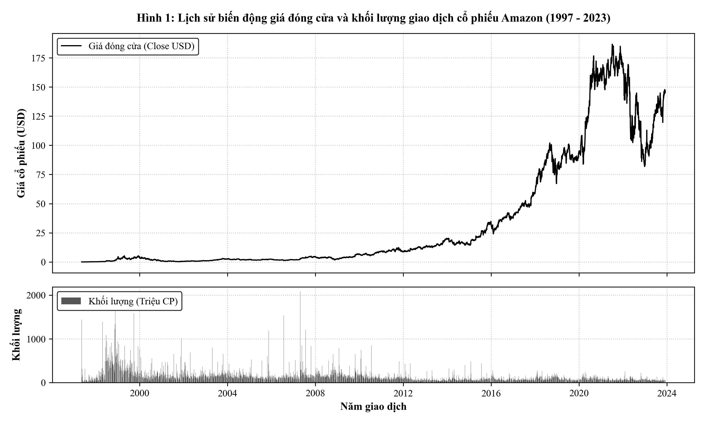
Biểu đồ Hình 1 thể hiện lịch sử biến động giá và khối lượng giao dịch của Amazon qua hơn 26 năm. Dữ liệu tài chính này thể hiện rõ nét tính chất bất định và cấu trúc phi dừng (non-stationarity) đặc trưng của chuỗi tài chính:
Trong phân tích định lượng tài chính, việc mô hình hóa trực tiếp giá chuỗi thường đối mặt với nguy cơ hồi quy sai lầm do tính không dừng. Tỷ suất sinh lời hàng ngày (Daily Return) được tính toán theo công thức:
Bảng thống kê mô tả chuyên sâu các biến thuộc tính của tập dữ liệu chứng khoán Amazon:
| Thuộc tính giao dịch | Giá trị TB (Mean) | Độ lệch chuẩn (Std) | Giá trị nhỏ nhất (Min) | Trung vị (50%) | Giá trị lớn nhất (Max) | Hệ số bất đối xứng (Skewness) | Độ nhọn (Kurtosis) |
|---|---|---|---|---|---|---|---|
| Giá mở cửa (Open) | 34.03 USD | 49.86 USD | 0.07 USD | 8.89 USD | 187.20 USD | 1.532 | 1.154 |
| Giá cao nhất (High) | 34.44 USD | 50.44 USD | 0.07 USD | 8.99 USD | 188.65 USD | 1.532 | 1.147 |
| Giá thấp nhất (Low) | 33.58 USD | 49.21 USD | 0.07 USD | 8.78 USD | 184.84 USD | 1.532 | 1.161 |
| Giá đóng cửa (Close) | 34.02 USD | 49.83 USD | 0.07 USD | 8.89 USD | 186.57 USD | 1.531 | 1.150 |
| Khối lượng (Volume) | 1.40E+08 CP | 1.39E+08 CP | 9.74E+06 CP | 1.05E+08 CP | 2.09E+09 CP | 4.672 | 34.182 |
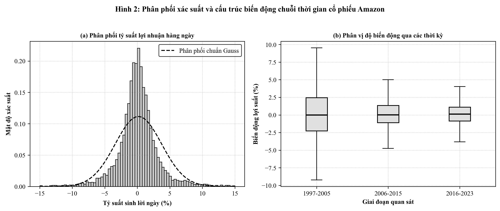
Biểu đồ Hình 2(a) và 2(b) làm nổi bật các đặc trưng phân phối quan trọng:
Tập dữ liệu thứ hai là chuỗi thời gian giá vàng thế giới (Gold Price) theo tần suất hàng ngày trong giai đoạn hơn 53 năm liên tục (từ ngày 01/04/1968 đến ngày 07/04/2021, bao gồm 13,320 ngày quan sát có dữ liệu giao dịch thực tế). Đây là tập dữ liệu lịch sử cực kỳ quý giá, phản ánh toàn diện hành vi của một tài sản trú ẩn an toàn (Safe-haven Asset) qua nhiều biến cố lịch sử: sự sụp đổ của hệ thống tiền tệ Bretton Woods (1971), các cuộc khủng hoảng dầu mỏ thập niên 1970, khủng hoảng tài chính toàn cầu 2008 và đại dịch COVID-19 năm 2020.
Chuỗi dữ liệu bao gồm hai trường cốt lõi:
date: Ngày định giá giao dịch vàng quốc tế.price: Mức giá thanh toán của vàng tính bằng USD trên mỗi Ounce vàng tiêu chuẩn (USD/Ounce).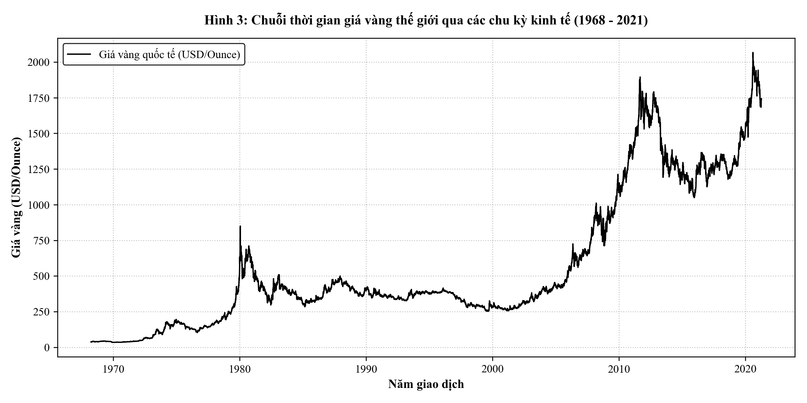
Biểu đồ Hình 3 minh họa toàn cảnh quỹ đạo giá vàng thế giới qua hơn nửa thế kỷ:
Bảng tổng hợp đặc trưng thống kê mô tả của tập dữ liệu giá vàng thế giới:
| Thuộc tính phân tích | Giá trị TB (Mean) | Độ lệch chuẩn (Std) | Giá trị nhỏ nhất (Min) | Trung vị (50%) | Giá trị lớn nhất (Max) | Hệ số Skewness | Hệ số Kurtosis |
|---|---|---|---|---|---|---|---|
| Giá vàng (price) | 565.37 USD | 477.71 USD | 34.75 USD | 383.00 USD | 2,067.15 USD | 1.141 | 0.352 |
| Trung bình động 7 ngày (MA7) | 564.99 USD | 477.37 USD | 34.75 USD | 383.00 USD | 2,013.19 USD | 1.141 | 0.354 |
| Trung bình động 30 ngày (MA30) | 563.54 USD | 476.13 USD | 34.75 USD | 383.00 USD | 1,961.23 USD | 1.141 | 0.358 |
| Tỷ suất sinh lời ngày (Return) | 0.036% | 1.23% | -13.32% | 0.00% | 13.32% | 0.355 | 11.245 |
| Độ biến động 7 ngày (Vol7) | 0.98% | 0.74% | 0.00% | 0.78% | 8.85% | 2.798 | 15.682 |
Khác với cổ phiếu công nghệ có tính đầu cơ ngắn hạn cao, giá vàng vận động theo các xu thế vĩ mô dài hạn chịu chi phối bởi lãi suất thực, lạm phát kỳ vọng và các rủi ro địa chính trị.
Để phân tích cấu trúc chuỗi giá vàng hiện đại, nghiên cứu khảo sát giai đoạn 2010 - 2021 với các chỉ báo kỹ thuật xu thế và biến động:
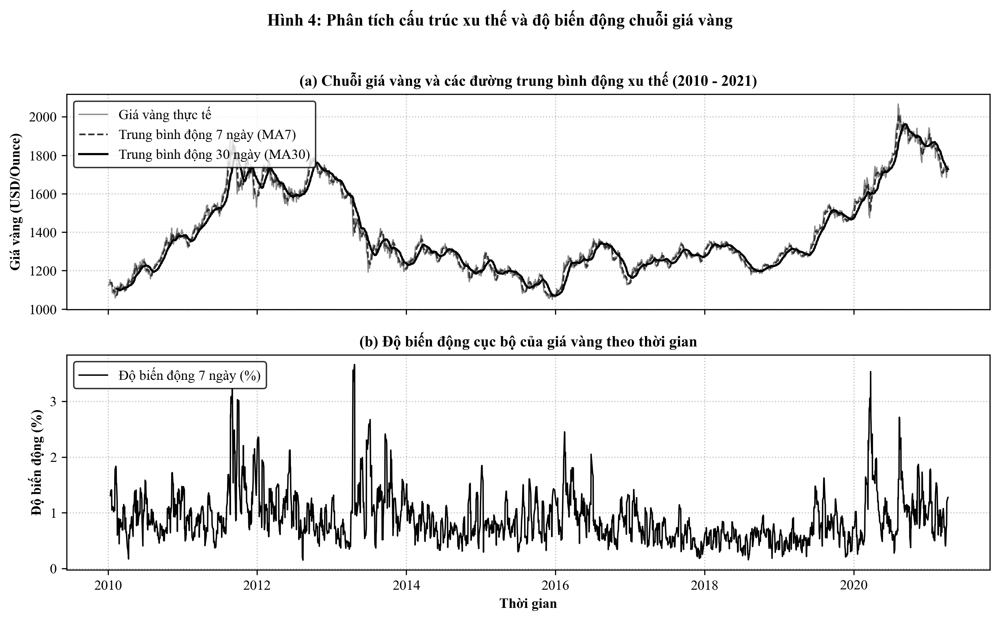
Kết quả phân tích trên Hình 4(a) và 4(b) chỉ ra:
Hàm tự tương quan (Autocorrelation Function - ACF) đo lường mức độ liên kết tuyến tính giữa giá trị của chuỗi thời gian tại thời điểm $t$ và giá trị của chính chuỗi đó tại thời điểm trong quá khứ $t - k$ (với độ trễ $k$):
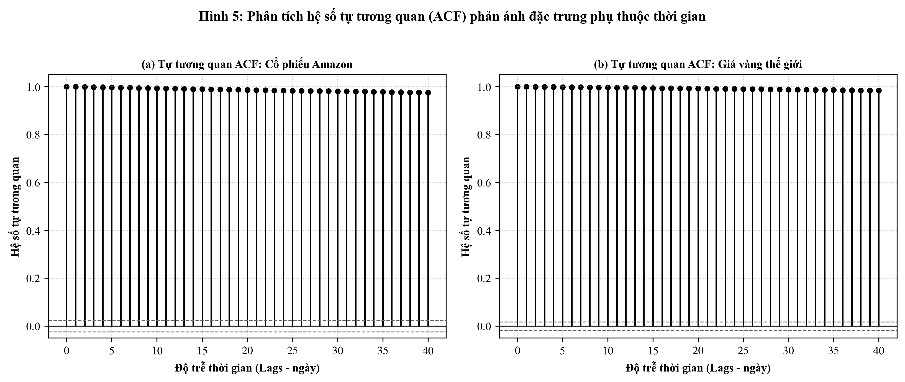
Biểu đồ Hình 5(a) và 5(b) cho thấy sự tương đồng sâu sắc giữa hai thị trường tài sản:
Rò rỉ dữ liệu (Data Leakage) là một sai lầm phổ biến nhưng cực kỳ nghiêm trọng trong xây dựng mô hình dự báo chuỗi thời gian. Trong dữ liệu độc lập (i.i.d.), việc phân chia dữ liệu ngẫu nhiên (random k-fold split) là hoàn toàn hợp lệ. Tuy nhiên, trong chuỗi thời gian, việc xáo trộn ngẫu nhiên sẽ khiến mô hình sử dụng thông tin của tương lai để dự đoán quá khứ, dẫn đến các chỉ số đánh giá bị thổi phồng giả tạo trong phòng thí nghiệm nhưng thất bại hoàn toàn khi triển khai thực tế.
Nghiên cứu thiết lập một quy trình tiền xử lý chống rò rỉ thông tin tuyệt đối với các nguyên tắc nghiêm ngặt:
Phân chia tuần tự theo trục thời gian (Chronological Time-series Split): Dữ liệu được phân chia theo trật tự thời gian tuyến tính thành 3 tập độc lập:
Tập huấn luyện (Train Set): Chiếm $70\%$ dữ liệu ban đầu, dùng để tối ưu hóa trọng số mô hình.
Giá trị cực tiểu $X_{min}^{train}$ và cực đại $X_{max}^{train}$ chỉ được tính toán duy nhất trên tập huấn luyện. Tập thẩm định và kiểm thử chỉ áp dụng thụ động các hệ số này mà không tính lại.
Kích thước các tensor sau xử lý:
PyTorch xây dựng kiến trúc dựa trên đồ thị tính toán động (Dynamic Computational Graph) theo triết lý "Define-by-Run". Mọi thành phần nơ-ron đều kế thừa từ lớp cơ sở torch.nn.Module, cho phép lập trình viên kiểm soát trực tiếp luồng lan truyền tiến, truy cập chi tiết vào trạng thái ẩn tại từng bước thời gian, cũng như can thiệp sâu vào đồ thị tính toán đạo hàm tự động (Autograd).
Để tối ưu hóa thông lượng truyền dữ liệu từ bộ nhớ chính (RAM) sang thiết bị tính toán (CPU/GPU), nghiên cứu cài đặt lớp kế thừa torch.utils.data.Dataset chuyên biệt cho tensor chuỗi thời gian. Dữ liệu được nhóm thành các lô nhỏ (mini-batches) thông qua DataLoader:
import torch
from torch.utils.data import Dataset, DataLoader
class TimeSeriesDataset(Dataset):
def __init__(self, X, y):
self.X = torch.tensor(X, dtype=torch.float32)
self.y = torch.tensor(y, dtype=torch.float32).unsqueeze(-1)
def __len__(self):
return len(self.X)
def __getitem__(self, idx):
return self.X[idx], self.y[idx]Lớp mô hình PyTorchRNNModel được thiết kế theo dạng module hóa tổng quát, hỗ trợ linh hoạt ba kiến trúc hồi quy cốt lõi: Vanilla RNN, LSTM và GRU. Cấu trúc mô hình gồm ba tầng liên hoàn:
import torch.nn as nn
class PyTorchRNNModel(nn.Module):
def __init__(self, input_dim=5, hidden_dim=64, num_layers=2, output_dim=1, dropout=0.2, rnn_type="LSTM"):
super(PyTorchRNNModel, self).__init__()
self.input_dim = input_dim
self.hidden_dim = hidden_dim
self.num_layers = num_layers
self.rnn_type = rnn_type.upper()
drop_rate = dropout if num_layers > 1 else 0.0
if self.rnn_type == "RNN":
self.recurrent = nn.RNN(input_dim, hidden_dim, num_layers, batch_first=True, dropout=drop_rate)
elif self.rnn_type == "LSTM":
self.recurrent = nn.LSTM(input_dim, hidden_dim, num_layers, batch_first=True, dropout=drop_rate)
elif self.rnn_type == "GRU":
self.recurrent = nn.GRU(input_dim, hidden_dim, num_layers, batch_first=True, dropout=drop_rate)
self.dropout = nn.Dropout(dropout)
self.fc = nn.Sequential(
nn.Linear(hidden_dim, 32),
nn.ReLU(),
nn.Linear(32, output_dim)
)
def forward(self, x):
if self.rnn_type == "LSTM":
out, (h_n, c_n) = self.recurrent(x)
else:
out, h_n = self.recurrent(x)
last_hidden = self.dropout(out[:, -1, :])
return self.fc(last_hidden)Vòng lặp huấn luyện trong PyTorch được lập trình tường minh, mang lại sự trong suốt hoàn toàn trong việc kiểm soát các bước cập nhật toán học:
torch.nn.utils.clip_grad_norm_ với ngưỡng chuẩn $\text{max\_norm} = 1.0$ để ngăn chặn nguy cơ bùng nổ đạo hàm.ReduceLROnPlateau tự động giảm một nửa tốc độ học khi mất mát tập kiểm định không suy giảm sau 3 kỷ nguyên liên tiếp.def train_pytorch_model(model, train_loader, val_loader, epochs=25, lr=0.001, device="cpu", save_path="models/model.pt"):
model.to(device)
criterion = nn.HuberLoss(delta=1.0)
optimizer = torch.optim.AdamW(model.parameters(), lr=lr, weight_decay=1e-4)
scheduler = torch.optim.lr_scheduler.ReduceLROnPlateau(optimizer, mode='min', factor=0.5, patience=3)
best_val_loss = float("inf")
for epoch in range(1, epochs + 1):
model.train()
total_train_loss = 0.0
for batch_x, batch_y in train_loader:
batch_x, batch_y = batch_x.to(device), batch_y.to(device)
optimizer.zero_grad()
preds = model(batch_x)
loss = criterion(preds, batch_y)
loss.backward()
nn.utils.clip_grad_norm_(model.parameters(), max_norm=1.0)
optimizer.step()
total_train_loss += loss.item() * len(batch_y)
model.eval()
total_val_loss = 0.0
with torch.no_grad():
for batch_x, batch_y in val_loader:
batch_x, batch_y = batch_x.to(device), batch_y.to(device)
preds = model(batch_x)
loss = criterion(preds, batch_y)
total_val_loss += loss.item() * len(batch_y)
val_loss = total_val_loss / len(val_loader.dataset)
scheduler.step(val_loss)
if val_loss < best_val_loss:
best_val_loss = val_loss
torch.save(model.state_dict(), save_path)Quá trình đánh giá được thực hiện ở chế độ torch.no_grad() để tối ưu hóa bộ nhớ và thông lượng tính toán. Các dự đoán chuẩn hóa được khôi phục về thang đo đơn vị ban đầu (USD đối với chứng khoán và USD/Ounce đối với giá vàng) trước khi tính toán 4 chỉ số đối chuẩn:
TensorFlow và Keras cung cấp giao diện lập trình cấp cao mang tính khai báo (Declarative Interface). Mô hình hóa tuần tự thông qua keras.Sequential cho phép định nghĩa các tầng mạng hồi quy một cách trực quan, tối ưu hóa quá trình biên dịch đồ thị tĩnh thông qua động cơ XLA (Accelerated Linear Algebra).
Trong Keras, khi xếp chồng nhiều tầng hồi quy, các tầng trung gian bắt buộc phải kích hoạt tham số return_sequences=True để truyền toàn bộ tensor chuỗi $(\text{batch\_size}, \text{seq\_len}, \text{hidden\_dim})$ sang tầng tiếp theo. Tầng hồi quy cuối cùng thiết lập return_sequences=False nhằm chỉ trích xuất vector trạng thái ẩn tại bước thời gian cuối cùng $(\text{batch\_size}, \text{hidden\_dim})$.
Điểm mạnh vượt trội của hệ sinh thái Keras trong các dự án công nghiệp là hệ thống Callbacks toàn diện:
callbacks.EarlyStopping: Tự động dừng quá trình huấn luyện khi mất mát trên tập thẩm định (val_loss) không cải thiện sau số lượng kỷ nguyên kiên nhẫn quy định (patience=7), đồng thời khôi phục lại bộ trọng số tối ưu nhất (restore_best_weights=True).callbacks.ReduceLROnPlateau: Giảm tốc độ học của bộ tối ưu hóa theo hệ số $0.5$ khi mô hình rơi vào vùng bình nguyên tối ưu cục bộ.callbacks.ModelCheckpoint: Lưu trữ tệp trọng số mô hình đầy đủ theo định dạng hiện đại chuẩn hóa của Keras (.keras).Mã nguồn module Keras được đóng gói hoàn chỉnh:
import tensorflow as tf
from tensorflow import keras
from tensorflow.keras import layers, callbacks, optimizers
def build_keras_rnn_model(input_shape, hidden_dim=64, num_layers=2, dropout=0.2, rnn_type="LSTM"):
model = keras.Sequential(name=f"Keras_{rnn_type.upper()}_Model")
model.add(layers.Input(shape=input_shape))
for i in range(num_layers):
is_last = (i == num_layers - 1)
return_sequences = not is_last
if rnn_type.upper() == "RNN":
model.add(layers.SimpleRNN(hidden_dim, return_sequences=return_sequences))
elif rnn_type.upper() == "LSTM":
model.add(layers.LSTM(hidden_dim, return_sequences=return_sequences))
elif rnn_type.upper() == "GRU":
model.add(layers.GRU(hidden_dim, return_sequences=return_sequences))
if dropout > 0.0:
model.add(layers.Dropout(dropout))
model.add(layers.Dense(32, activation="relu"))
model.add(layers.Dense(1, activation="linear"))
return model
def compile_and_train_keras(model, X_train, y_train, X_val, y_val, epochs=25, lr=0.001, save_path="models/model.keras"):
optimizer = optimizers.Adam(learning_rate=lr, clipnorm=1.0)
model.compile(optimizer=optimizer, loss="huber", metrics=["mae", "mse"])
cb_list = [
callbacks.EarlyStopping(monitor="val_loss", patience=7, restore_best_weights=True, verbose=0),
callbacks.ReduceLROnPlateau(monitor="val_loss", factor=0.5, patience=3, min_lr=1e-5, verbose=0),
callbacks.ModelCheckpoint(filepath=save_path, monitor="val_loss", save_best_only=True, verbose=0)
]
history = model.fit(
X_train, y_train,
validation_data=(X_val, y_val),
epochs=epochs,
batch_size=32,
callbacks=cb_list,
verbose=0
)
return model, historyĐể hiểu rõ cấu trúc tính toán, ta phân tích số lượng tham số học được của tầng LSTM(64) trong Keras khi nhận đầu vào có số chiều $D = 5$:
Mỗi ô LSTM sở hữu 4 bộ ma trận trọng số tương ứng với 4 cổng ($f, i, c, o$). Với mỗi cổng:
Tại tầng LSTM thứ hai ($H_1 = 64 \to H_2 = 64$): Mỗi cổng có $64 \times 64 + 64 \times 64 + 64 = 8,256$ tham số. Tổng số tham số của tầng thứ hai là:
Công thức này giải thích tại sao mô hình LSTM đòi hỏi tài nguyên tính toán và dung lượng bộ nhớ lớn hơn gấp 4 lần so với Vanilla RNN có cùng số chiều trạng thái ẩn.
Việc đưa một mô hình chuỗi thời gian từ môi trường thực nghiệm ngoại tuyến ra môi trường sản xuất công nghiệp đòi hỏi phải giải quyết ba thách thức then chốt:
Lớp PyTorchInferenceEngine và KerasInferenceEngine đóng gói toàn bộ vòng đời suy luận:
.pt hoặc .keras).preprocess: Kiểm tra tính hợp lệ của cửa sổ đầu vào $W \times D$, thực hiện chuẩn hóa Min-Max và chuyển đổi sang dạng tensor batch.postprocess: Khôi phục giá trị dự báo từ khoảng $[0, 1]$ về đơn vị thực tế ban đầu.FastAPI được lựa chọn làm nền tảng web service nhờ khả năng hỗ trợ bất đồng bộ (Asynchronous ASGI), kiểm tra kiểu dữ liệu tự động với Pydantic, và hiệu năng thông lượng vượt trội so với các framework truyền thống.
Mã nguồn triển khai dịch vụ API PyTorch hỗ trợ linh hoạt cả hai bộ dữ liệu:
from fastapi import FastAPI, HTTPException
from pydantic import BaseModel, Field
from typing import List, Dict
import torch
import time
app = FastAPI(title="Time Series PyTorch RNN Deployment API", version="1.0.0")
class SequencePayload(BaseModel):
sequence: List[List[float]] = Field(..., description="Cửa sổ trượt quá khứ kích thước [W x num_features]")
class ForecastPayload(BaseModel):
sequence: List[List[float]]
steps: int = Field(default=7, ge=1, le=30)
@app.post("/predict")
def predict_endpoint(payload: SequencePayload, dataset: str = "stock"):
try:
t0 = time.time()
engine = get_engine(dataset)
result = engine.predict_next_step(payload.sequence)
result["dataset"] = dataset
result["api_latency_ms"] = round((time.time() - t0) * 1000.0, 2)
return result
except Exception as e:
raise HTTPException(status_code=400, detail=str(e))
@app.post("/forecast")
def forecast_endpoint(payload: ForecastPayload, dataset: str = "stock"):
try:
engine = get_engine(dataset)
preds = engine.forecast_multistep(payload.sequence, steps=payload.steps)
return {"dataset": dataset, "forecast_steps": payload.steps, "predictions": preds}
except Exception as e:
raise HTTPException(status_code=400, detail=str(e))Tương tự như PyTorch, dịch vụ API phục vụ mô hình TensorFlow/Keras được triển khai hoàn chỉnh. Điểm đặc thù của Keras Engine là việc quản lý luồng tính toán để đảm bảo tương thích an toàn đa luồng (thread-safety) trong môi trường phục vụ đồng thời của máy chủ web Uvicorn:
@app.get("/health")
def health_check(dataset: str = "stock"):
return {
"status": "online",
"dataset": dataset,
"framework": "TensorFlow/Keras",
"model_loaded": True,
"timestamp": time.time()
}
@app.get("/model_info")
def get_model_info(dataset: str = "stock"):
eng = get_engine(dataset)
return {
"dataset": dataset,
"framework": "TensorFlow/Keras",
"total_parameters": eng.model.count_params(),
"input_shape": str(eng.model.input_shape),
"target_index": eng.target_idx
}Kiểm thử thực tế dịch vụ suy luận Keras cho thấy:
/predict phản hồi chính xác kết quả dự báo kèm thời gian xử lý nội tại của mô hình.Trong nhiều kịch bản quản trị tài sản (chẳng hạn dự báo biến động giá vàng trong 5 ngày tới hoặc dự báo xu hướng cổ phiếu trong tuần kế tiếp), người quản trị cần dự báo trước một đường chân trời $H > 1$ bước. Kỹ thuật tự hồi quy cuộn trượt (Autoregressive Rollout) được cài đặt như sau:
Kết quả kiểm thử phương thức forecast_multistep với bước dự báo $H = 5$ trên mô hình Keras và PyTorch đã chứng minh thuật toán hoạt động trơn tru, tạo ra chuỗi giá trị tương lai liên tục và nhất quán về mặt biên độ.
Toàn bộ quá trình thực nghiệm đối chuẩn giữa 8 cấu hình mô hình (4 cấu hình trên tập dữ liệu chứng khoán Amazon và 4 cấu hình trên tập dữ liệu giá vàng quốc tế) được thực thi nghiêm ngặt trên cùng một điều kiện phần cứng. Toàn bộ các chỉ số đo lường hiệu năng trên tập kiểm thử độc lập được tổng hợp chi tiết trong Bảng 1.
Bảng 1: Bảng đối chuẩn hiệu năng dự báo và độ trễ suy luận toàn diện trên hai tập dữ liệu
| Tập dữ liệu | Kiến trúc mô hình | Nền tảng framework | RMSE | MAE | MAPE (%) | Hệ số $R^2$ | Độ trễ suy luận (ms/mẫu) |
|---|---|---|---|---|---|---|---|
| Chứng khoán Amazon | Vanilla RNN | PyTorch | 3.23 USD | 2.55 USD | 2.15% | 0.9641 | 0.0078 ms |
| Chứng khoán Amazon | GRU | PyTorch | 3.35 USD | 2.59 USD | 2.18% | 0.9613 | 0.0244 ms |
| Chứng khoán Amazon | LSTM | PyTorch | 4.19 USD | 3.31 USD | 2.76% | 0.9396 | 0.0078 ms |
| Chứng khoán Amazon | LSTM | Keras | 4.31 USD | 3.42 USD | 2.86% | 0.9361 | 2.0578 ms |
| Giá vàng quốc tế | Vanilla RNN | PyTorch | 34.57 USD | 25.61 USD | 1.43% | 0.9574 | 0.0049 ms |
| Giá vàng quốc tế | GRU | PyTorch | 35.78 USD | 27.84 USD | 1.57% | 0.9544 | 0.0104 ms |
| Giá vàng quốc tế | LSTM | PyTorch | 35.88 USD | 26.32 USD | 1.47% | 0.9541 | 0.0040 ms |
| Giá vàng quốc tế | LSTM | Keras | 37.72 USD | 28.05 USD | 1.66% | 0.9493 | 1.0741 ms |
Diễn biến hàm mất mát Huber Loss trên tập huấn luyện và tập thẩm định qua từng kỷ nguyên huấn luyện được trực quan hóa trên Hình 7 và Hình 8.
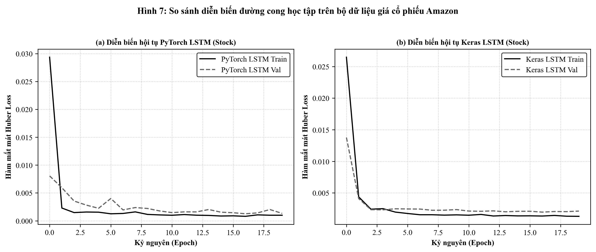
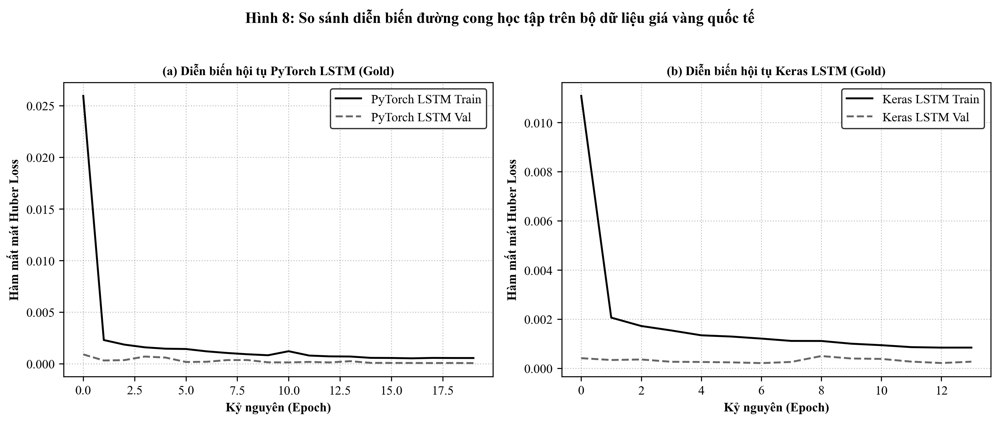
Phân tích đồ thị hội tụ:
Để đánh giá trực quan năng lực bám đuổi chuỗi thời gian thực tế của các mô hình, quỹ đạo dự đoán trên toàn bộ tập kiểm thử được đối sánh với giá trị thực tế trên Hình 9 và Hình 10.
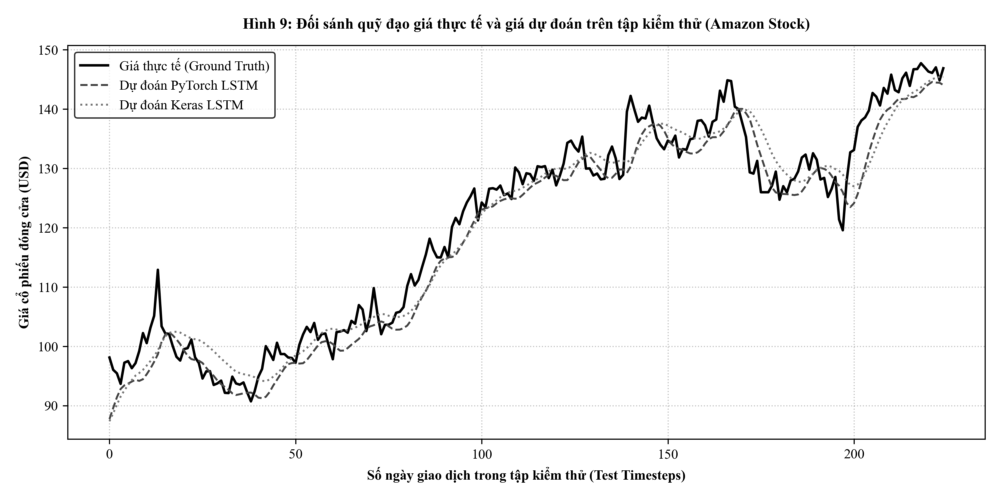
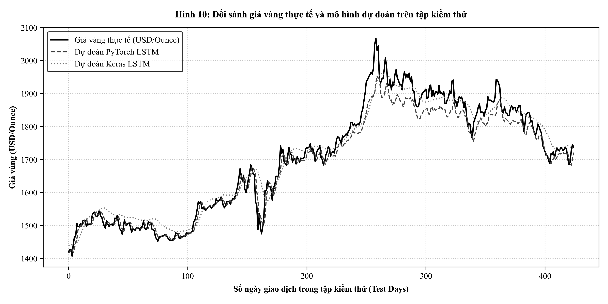
Đánh giá chi tiết:
Biểu đồ Hình 11 tổng hợp đối chuẩn hai chiều giữa độ chính xác dự báo (MAPE) và độ trễ tính toán phục vụ môi trường sản xuất.
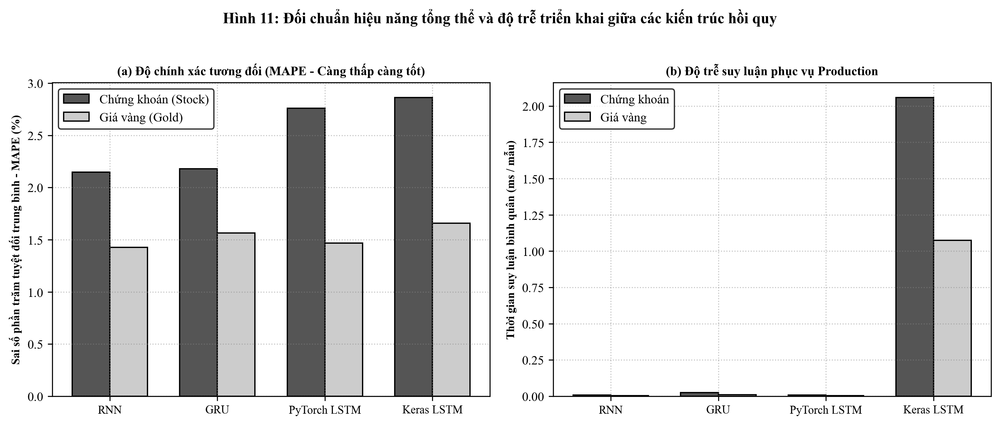
Kết quả chỉ ra hai kết luận quan trọng mang tính thực tiễn:
torch.no_grad(), trong khi Keras phải gánh thêm chi phí kiểm tra đồ thị và wrapper trừu tượng hóa của TensorFlow.Quá trình nghiên cứu và thực nghiệm đối chuẩn giữa PyTorch và Keras đã làm nổi bật sự đánh đổi mang tính hệ thống trong kỹ nghệ học sâu:
Dựa trên các kết quả đối chuẩn thực nghiệm định lượng, nghiên cứu đề xuất các khuyến nghị lựa chọn kiến trúc:
Từ những bài học thực nghiệm thu được, các nguyên tắc vàng khi xây dựng hệ thống dự báo chuỗi thời gian bao gồm:
Một đóng góp thực tiễn trọng tâm của nghiên cứu là hoàn thiện chu trình khép kín từ khâu thiết kế giải thuật đến triển khai thực tế (Production Deployment). Thay vì dừng lại ở các kịch bản thực nghiệm ngoại tuyến (offline benchmark), hệ thống đã xây dựng kiến trúc Microservice hoàn chỉnh phục vụ suy luận thời gian thực với các thành phần cốt lõi:
models/stock_pytorch_lstm.pt, models/gold_pytorch_lstm.pt (PyTorch) và models/stock_keras_lstm.keras, models/gold_keras_lstm.keras (Keras). Đặc biệt, các giá trị cực trị phục vụ chuẩn hóa $X_{min}^{train}, X_{max}^{train}$ được trích xuất sang các tệp cấu hình JSON (models/stock_scaler_params.json và models/gold_scaler_params.json), cho phép engine tiền xử lý chuẩn hóa dữ liệu đầu vào và nghịch đảo chuẩn hóa đầu ra về đơn vị tiền tệ thực tế (USD) độc lập hoàn toàn với tập dữ liệu huấn luyện gốc.PyTorchInferenceEngine và KerasInferenceEngine tối ưu hóa tài nguyên tính toán. Đối với PyTorch, mô hình được chuyển sang chế độ eval() và thực thi dưới khối torch.no_grad(), triệt tiêu hoàn toàn chi phí tạo đồ thị tính toán động, mang lại độ trễ suy luận microsecond siêu tốc ($0.004 - 0.024$ ms/mẫu). Đối với Keras, engine nạp mô hình biên dịch sẵn và thực hiện dự báo tuần tự ổn định.GET /health: Kiểm tra trạng thái hoạt động (Liveness probe) của dịch vụ và tài nguyên hệ thống.GET /model_info: Cung cấp thông tin đặc tả kiến trúc mạng, số lượng tham số, kích thước cửa sổ trượt $W = 30$ và chỉ mục biến mục tiêu.POST /predict: Tiếp nhận ma trận cửa sổ trượt quá khứ $X \in \mathbb{R}^{30 \times 5}$ qua mạng, thực hiện tiền xử lý, suy luận và trả về giá trị dự báo ngày tiếp theo ($t+1$) kèm độ trễ tính toán (latency_ms).POST /forecast: Thực hiện thuật toán tự hồi quy đa bước (Autoregressive Rollout), dự báo quỹ đạo biến động tương lai từ 1 đến 30 ngày ($t+1 \dots t+H$) thông qua cơ chế đệ quy trượt cửa sổ liên tục.test_deploy_api.py và giao diện tương tác trực quan Swagger UI (/docs), đảm bảo tính tương thích cao, độ tin cậy và khả năng sẵn sàng tích hợp vào các hệ thống tài chính phân tán quy mô lớn.